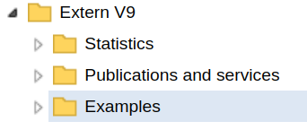
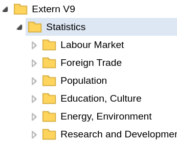
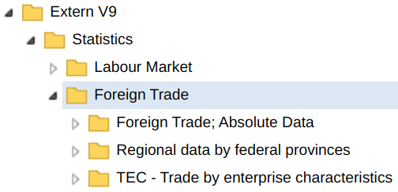
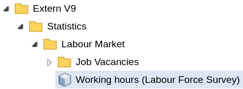
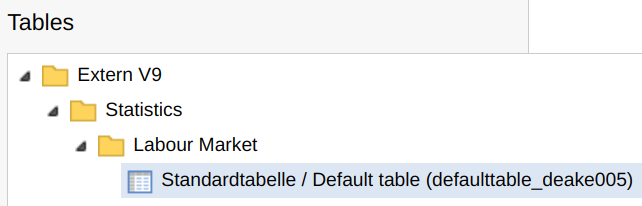
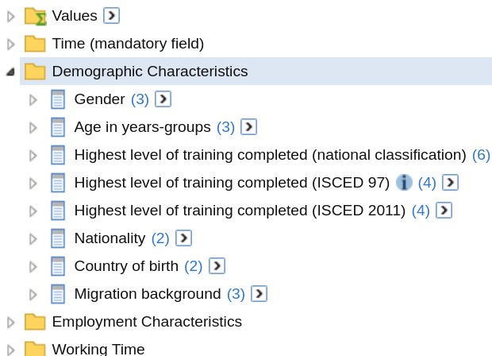

There are currently three functions in
STATcubeR
that utilize the /schema endpoint.
-
sc_schema_catalogue()returns an overview of all available databases and tables. -
sc_schema_db()can be used to inspect all fields and measures for a database. -
sc_schema()returns metadata about any resource.
Browsing the Catalogue
The first function shows the catalogue, which lists all available databases in a tree form. The tree structure is determined by the API and closely resembles the “Catalogue” view in the GUI.
my_catalogue <- sc_schema_catalogue()
my_catalogueFOLDER: Extern V9
# A data frame: 9 × 3
child type n_childs
<chr> <chr> <int>
1 Examples FOLDER 9
2 Publications and services FOLDER 2
3 Default Tables FOLDER 0
4 Statistics FOLDER 20
5 Bier auf Wein TABLE 0
6 hierarchical TABLE 0
7 neu TABLE 0
8 lebenserwartung TABLE 0
9 test123 TABLE 0We see that the catalog has 8 child nodes: Four childs of type
FOLDER and four childs of type TABLE. The
table nodes correspond to the saved tables as described in the
saved tables article.
The folders include all folders from the root level in the catalogue
explorer: “Statistics”, “Publication and Services” as well as
“Examples”.

To get access to the child nodes use
my_catalogue${child_label}
my_catalogue$StatisticsFOLDER: Statistics
# A data frame: 20 × 3
child type n_childs
<chr> <chr> <int>
1 Labour Market FOLDER 14
2 Foreign Trade FOLDER 4
3 Population FOLDER 16
4 Education, Culture FOLDER 5
5 Energy, Environment FOLDER 2
# … with 15 more rowsThe child node Statistics is also of class
sc_schema and shows all entries of the subfolder.

This syntax can be used to navigate through folders and subfolders.
my_catalogue$Statistics$`Foreign Trade`FOLDER: Foreign Trade
# A data frame: 4 × 3
child type n_childs
<chr> <chr> <int>
1 TEC - Trade by enterprise characteristics FOLDER 20
2 Außenhandelsindizes FOLDER 0
3 Foreign Trade; Absolute Data FOLDER 12
4 Regional data by federal provinces FOLDER 6
In some cases, the API shows more folders than the GUI in which case the folders from the API will be empty.
my_catalogue$Statistics$`Foreign Trade`$AußenhandelsindizesFOLDER: AußenhandelsindizesDatabases and Tables
Inside the catalogue, the leafs1 of the tree are mostly of type
DATABASE and TABLE. Here is an example for the
DATABASE node deake005.
my_catalogue$Statistics$`Labour Market`$`Working hours (Labour Force Survey)`DATABASE: Working hours (Labour Force Survey)
# Get more info with `sc_schema_db('str:database:deake005')` 
The function sc_schema_db() will be shown in the next
section. As an example for a TABLE node, consider the default
table for deake005.
my_catalogue$Statistics$`Labour Market`$
`Standardtabelle / Default table (defaulttable_deake005)`TABLE: Standardtabelle / Default table (defaulttable_deake005)
Get the data with `sc_table_saved('str:table:defaulttable_deake005')` 
As suggested by the output, tables can be loaded with the
/table endpoint via sc_table_saved(). See the
saved tables article
for more details.
Database Infos
To get information about a specific database, you can pass the
database id to sc_schema_db(). Similar to
sc_schema_catalogue(), the return value has a tree-like
data structure.
my_db_info <- sc_schema_db("deake005")
my_db_infoDATABASE: Working hours (Labour Force Survey)
# A data frame: 8 × 3
child type n_childs
<chr> <chr> <int>
1 Factors GROUP 9
2 Datensätze/Records GROUP 1
3 Time (mandatory field) GROUP 1
4 Demographic Characteristics GROUP 8
5 Employment Characteristics GROUP 6
# … with 3 more rowsFor comparison, here is a screenshot from the sidebar of the table
view for deake005
which has a similar (but not identical) structure.

my_db_info can be used in a similar fashion as
my_catalogue to obtain details about the resources in the
tree. For example, the VALUESET with the label “Gender” can
be viewed like this.
my_db_info$`Demographic Characteristics`GROUP: Demographic Characteristics
# A data frame: 8 × 3
child type n_childs
<chr> <chr> <int>
1 Gender FIELD 1
2 Age in years-groups FIELD 3
3 Highest level of training completed (national classification) FIELD 2
4 Highest level of training completed (ISCED 97) FIELD 2
5 Highest level of training completed (ISCED 2011) FIELD 2
# … with 3 more rows
my_db_info$`Demographic Characteristics`$Gender$GenderVALUESET: Gender
# A data frame: 3 × 3
child type n_childs
<chr> <chr> <int>
1 male VALUE 0
2 female VALUE 0
3 Not classifiable <0> VALUE 0
my_db_info$`Demographic Characteristics`$Gender$Gender$maleVALUE: maleThe leafs of database schemas are mostly of type VALUE
and MEASURE.
Data Structure of sc_schema Objects
As shown above, sc_schema objets have a tree like
structure. Each sc_schema object has id,
label, location and type as the
last four entries
#> List of 4
#> $ id : chr "str:group:deake005:X_B1"
#> $ label : chr "Demographic Characteristics"
#> $ location: chr "http://statcubeapi.statistik.at/statistik.at/ext/statcube/rest/v1/schema/str:group:deake005:X_B1"
#> $ type : chr "GROUP"#> List of 4
#> $ id : chr "str:folder:festat"
#> $ label : chr "Statistics"
#> $ location: chr "http://statcubeapi.statistik.at/statistik.at/ext/statcube/rest/v1/schema/str:folder:festat"
#> $ type : chr "FOLDER"Schema objects can have an arbitrary amount of children. Children are
always of type sc_schema. x$type contains the
type of the schema object. A complete list of schema types is avilable
in the API
reference.
Other Resources
Information about resources other than databases and the catalogue
can be obtained by passing the resource id to
sc_schema().
(id <- my_db_info$Factors$id)#> [1] "str:group:deake005:M_F1"
group_info <- sc_schema(id)
group_infoGROUP: Factors
# A data frame: 9 × 3
child type n_chi…¹
<chr> <chr> <int>
1 Average hours actually worked per week MEASURE 0
2 Average hours usually worked per week MEASURE 0
3 Volume of hours worked in the main job per year in million ho… MEASURE 0
4 Volume of hours worked overtime (paid) per year in million ho… MEASURE 0
5 Volume of hours worked overtime (unpaid) per year in million … MEASURE 0
# … with 4 more rows, and abbreviated variable name ¹n_childsNote that the tree returned only has depth 1, i.e. the child nodes of
measures are not available in group_info. However, ids of
the child nodes can be obtained with $id. These ids can be
used to send another request to the /schema endpoint
(id <- group_info$`Average hours usually worked per week`$id)#> [1] "str:measure:deake005:F-DATA:F-FAKTOR2"
measure_info <- sc_schema(id)Alternatively, use the depth parameter of
sc_schema(). This will make sure that the entries of the
tree are returned recursively up to a certain level. For example,
depth = "VALUESET" will use the same level of recursion as
sc_schema_db(). See ?sc_schema for all
available options of the depth parameter.
Printing with data.tree
If the data.tree package is installed, it can be used for an alternative print mehtod.
print(group_info, tree = TRUE)#> levelName type
#> 1 Demographic Characteristics GROUP
#> 2 ¦--Gender FIELD
#> 3 ¦ °--Gender VALUESET
#> 4 ¦ ¦--male VALUE
#> 5 ¦ ¦--female VALUE
#> 6 ¦ °--Not classifiable <0> VALUE
#> 7 ¦--Age in years-groups FIELD
#> 8 ¦ ¦--Age in years-groups VALUESET
#> 9 ¦ ¦ ¦--Under 15 years VALUE
#> 10 ¦ ¦ ¦--15 to 19 years VALUE
#> 11 ¦ ¦ ¦--20 to 24 years VALUE
#> 12 ¦ ¦ ¦--25 to 29 years VALUE
#> 13 ¦ ¦ ¦--30 to 34 years VALUE
#> 14 ¦ ¦ ¦--35 to 39 years VALUE
#> 15 ¦ ¦ ¦--40 to 44 years VALUE
#> 16 ¦ ¦ ¦--45 to 49 years VALUE
#> 17 ¦ ¦ ¦--50 to 54 years VALUE
#> 18 ¦ ¦ ¦--55 to 59 years VALUE
#> 19 ¦ ¦ ¦--60 to 64 years VALUE
#> 20 ¦ ¦ ¦--65 to 69 years VALUE
#> 21 ¦ ¦ ¦--70 to 74 years VALUE
#> 22 ¦ ¦ ¦--75 years and older VALUE
#> 23 ¦ ¦ °--Not classifiable <0> VALUE
#> 24 ¦ ¦--Alter in Jahresgruppen VALUESET
#> 25 ¦ ¦ ¦--Under 15 years VALUE
#> 26 ¦ ¦ ¦--15 to 24 years VALUE
#> 27 ¦ ¦ ¦--25 to 34 years VALUE
#> 28 ¦ ¦ ¦--35 to 44 years VALUE
#> 29 ¦ ¦ ¦--45 to 54 years VALUE
#> 30 ¦ ¦ °--... 3 nodes w/ 0 sub
#> 31 ¦ °--... 1 nodes w/ 6 sub
#> 32 °--... 6 nodes w/ 80 subThe data.tree implementation of the print method can
be set as a default using the option
STATcubeR.print_tree
options(STATcubeR.print_tree = TRUE)Flatten a Schema
The function sc_schema_flatten() can be used to turn
responses from the /schema endpoint into
data.frames. The following call extracts all databasess
from the catalogue and displays their ids and labels.
sc_schema_catalogue() %>%
sc_schema_flatten("DATABASE")# A data frame: 618 × 2
id label
<chr> <chr>
1 str:database:dedemo Communes (Demo)
2 str:database:depeople People
3 str:database:depeopleml People multilingual
4 str:database:deretailml Retail Banking ML en
5 str:database:dekonjunkturmonitor Economic Trend Monitor
# … with 613 more rowsThe string "DATABASE" in the previous example acts as a
filter to make sure only nodes with the schema type
DATABASE are included in the table.
If "DATABASE" is relaced with "TABLE", all
tables will be displayed. This includes
- All the defaulttables on STATcube. Most databases have an associated default table.
- All saved tables for the current user as described in the saved tables article.
- Other saved tables. Some databases do not only provide a default table but also several other tables. See this database on transport statistics as an example for database with more than one associated table
sc_schema_catalogue() %>%
sc_schema_flatten("TABLE")# A data frame: 647 × 2
id label
<chr> <chr>
1 str:table:7f851bfd-4bc0-4cc7-9013-e3c7982c9842 Monitoring
2 str:table:defaulttable_depeopleml Standardtabelle / Default tabl…
3 str:table:defaulttable_dedemo Standardtabelle / Default tabl…
4 str:table:E-A_nach_Bundeslaendern_dedemo E-A_nach_Bundeslaendern_dedemo
5 str:table:Jahre_nach_NUTS_dedemo Jahre_nach_NUTS_dedemo
# … with 642 more rowssc_schema_flatten() can also be used with
sc_schema_db() and sc_schema(). The following
example shows all available measures from the economic
trend monitor database.
sc_schema_db("dekonjunkturmonitor") %>%
sc_schema_flatten("MEASURE")# A data frame: 86 × 2
id label
<chr> <chr>
1 str:measure:dekonjunkturmonitor:F-DATA:F-FAKT-1 Production Index Industry (wd…
2 str:measure:dekonjunkturmonitor:F-DATA:F-FAKT-2 Technical total production In…
3 str:measure:dekonjunkturmonitor:F-DATA:F-FAKT-3 Turnover Index Industry (2015…
4 str:measure:dekonjunkturmonitor:F-DATA:F-FAKT-4 Turnover Industry (in 1.000 €)
5 str:measure:dekonjunkturmonitor:F-DATA:F-FAKT-5 Index of new orders Industry …
# … with 81 more rows